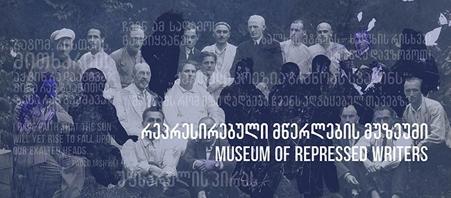
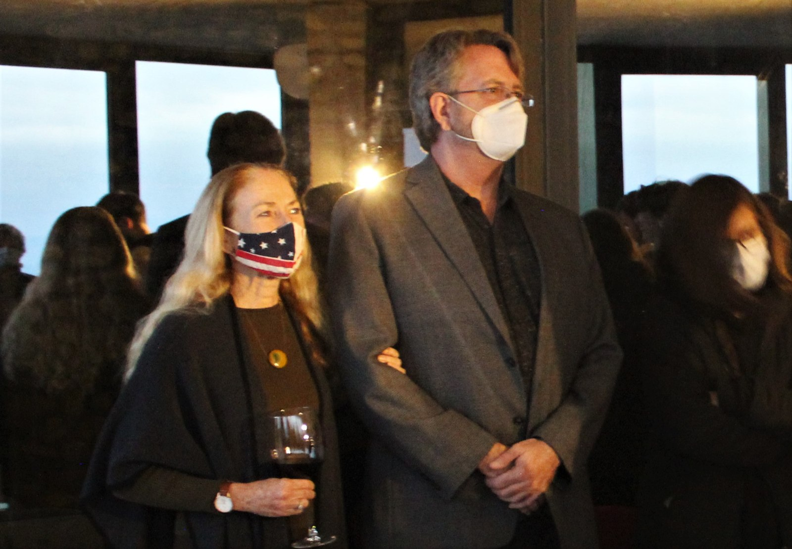
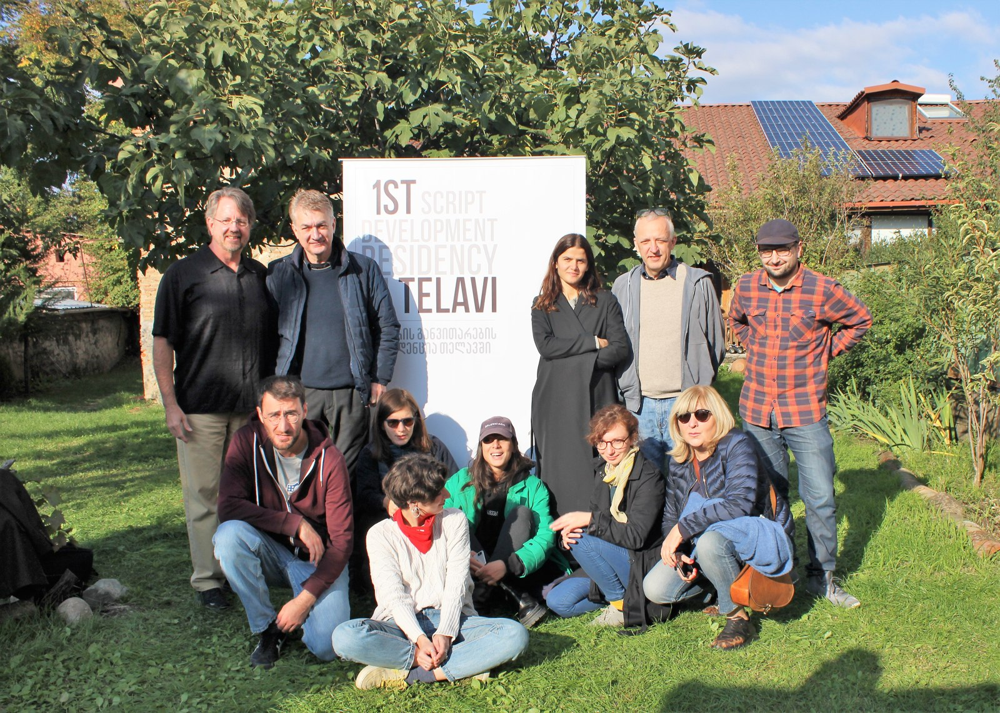
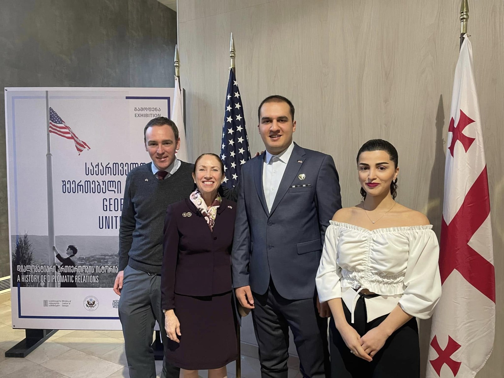
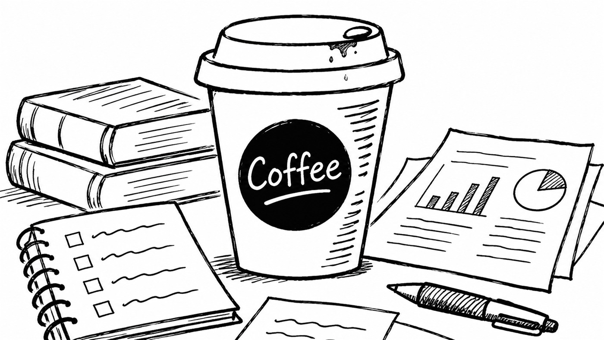
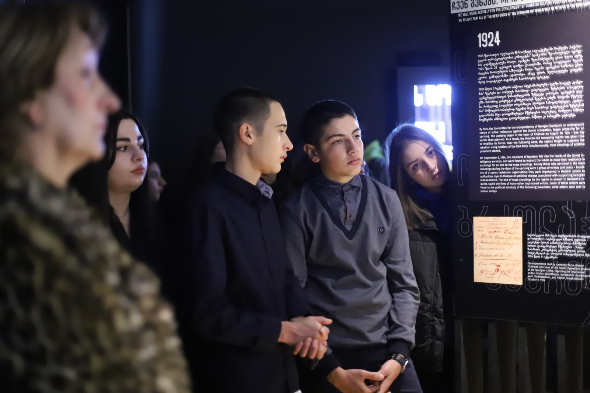
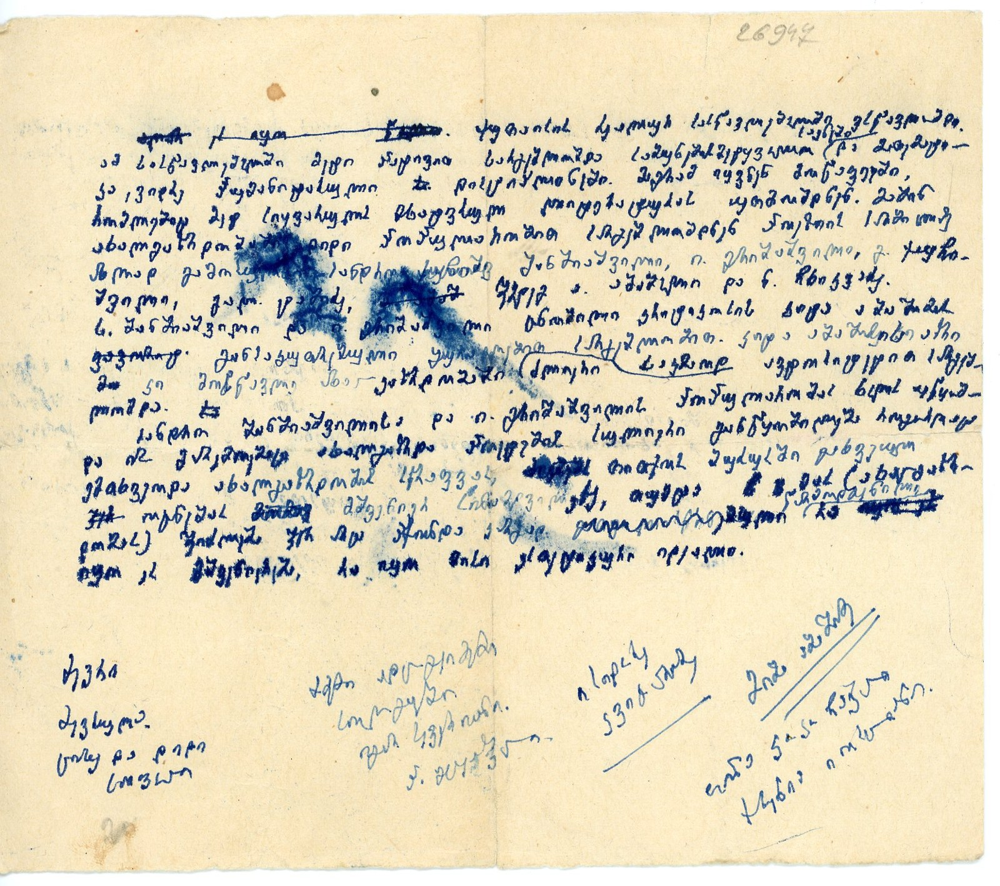
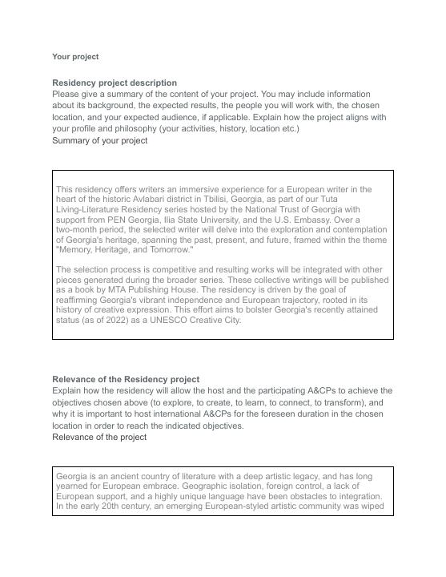

2021–2023Museum opened

Museum of Repressed Writers · Writers’ HouseMuseum of Repressed Writers
U.S. Embassy Tbilisi and Writers’ House of Georgia
Writing the grant and helping develop the Writers’ House museum dedicated to Georgian writers persecuted under Soviet rule.
Grant writer and cultural programme coordinator
Explore project2022Proposal prepared

Cultural programming · related photographAmerican Days
U.S. Embassy Tbilisi; EUR/PPD funding
Program proposal writing for American Days cultural programming.
Proposal writer
Explore project2022Proposal prepared
Writing and proposal development · illustrative imageTsinandali Jazz and Wine Festival
ECA Arts Envoy Program
An Arts Envoy proposal connected to the Tsinandali festival.
Proposal writer
Explore project2022Proposal prepared

Script development residency · TelaviZaira Arsenishvili Screenwriters’ Residency
ECA Arts Envoy Program
Proposal development for a screenwriters’ residency.
Proposal writer
Explore project2022Writing and presentations completed

Georgia–U.S. diplomatic-history exhibitionNational Archives: U.S.–Georgia history and exhibitions
Georgian National Archives and U.S. Embassy Tbilisi
Archival research, exhibition-book writing, and conference presentations on the history of U.S.–Georgia relations.
Researcher, English text editor, preface co-author, and conference presenter
Explore project2022–2023Embassy project support

Research and collections · illustrative imageGeorgian National Museum: Digital South Caucasus Collection
U.S. Embassy Tbilisi, Georgian National Museum, and New York University
Supporting Embassy follow-up on the Digital South Caucasus Collection partnership between NYU and the Georgian National Museum.
Embassy liaison and project follow-up
Explore project2023–2025Funded initiative

Historical memory · related museum photographThe Memory Project
Ilia State University and international partners
A collaborative project on historical memory, archives, and public understanding of Georgia’s Soviet past.
Project manager and proposal writer
Explore project2023–2024Not funded

Literature Museum collection material · proposal contextDigitizing Georgian Literature Museum collections
Ilia State University; Modern Endangered Archives Program
A preservation and digitization application for Georgian literary archives.
Proposal development and project planning
Explore project2023–2024Pilot completed
 Preservation masterclass · Literature Museum
Preservation masterclass · Literature MuseumPreserving the Blue Horns manuscript collection
Giorgi Leonidze State Museum of Georgian Literature / Ilia State University; ARISC
A manuscript-preservation pilot combining condition assessment, archival storage, a bilingual finding aid, training, and public engagement.
Project manager
Explore project2024Proposal prepared

TUTA residency · application draftTUTA Living-Literature Residency
National Trust of Georgia; Culture Moves Europe
A residency proposal connecting writing, memory, and Georgian cultural heritage.
Proposal writer
Explore project2026Preliminary proposal draft
Writing and proposal development · illustrative imageCounter-Archives: private family histories
Collaboration with Ketevan Gurchiani; MEAP
A planning proposal concerning family-held historical material in western Georgia.
Proposal-development collaborator
Explore project